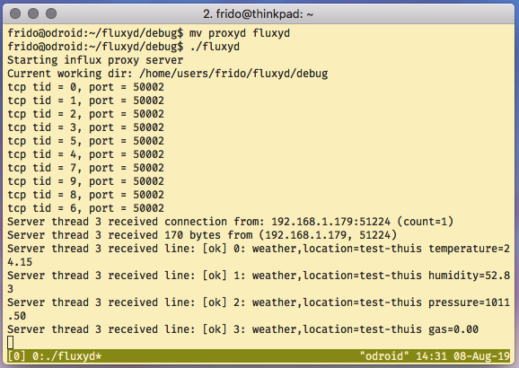

fluxyd
fluxyd is a small multi threaded proxy for the influxdb time series database. It can be used to store incoming tcp requests locally in text files and send them when an influx server is available. No changes to the client are necessary, only timestamps will be injected for each line.

You can find releases and source on github, report any bugs there.